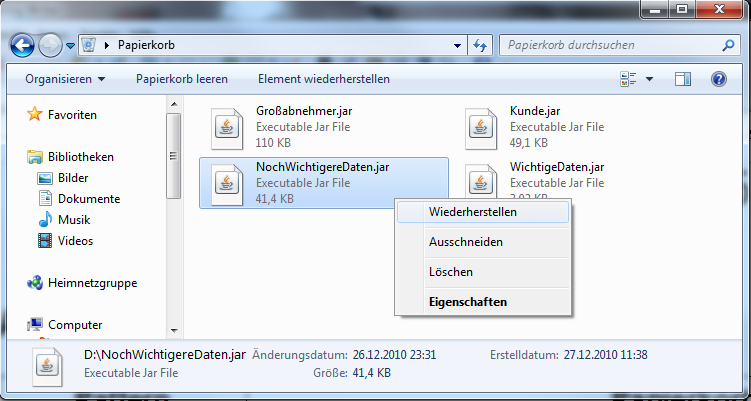
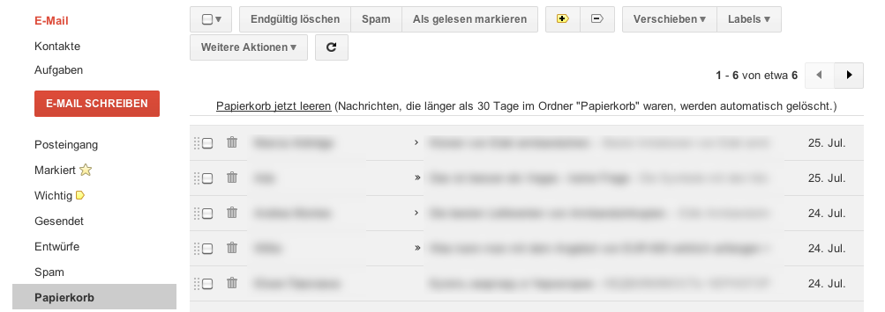

| Usability Pattern | Papierkorb |
|---|---|
| Problem | Benutzer löschen bestimmt Daten, stellen aber zu einem späteren Zeitpunkt fest, dass sie die Daten doch noch benötigen. |
| Lösung |
Erlaube Benutzern, Daten zunächst vorläufig zu löschen und in einen „Papierkorb“ zu verschieben. Beim vorläufigen Löschen verschiebt das System aus Sicht der Benutzer die Daten von ihrem ursprünglichen Speicherort (z.B. einem Ordner oder einer Liste) in einen virtuellen Papierkorb. Benutzer erreichen damit ihr Ziel, nicht mehr benötigte Daten zu entfernen. Gleichzeitig ermöglicht der Papierkorb Benutzern, diese Daten zu einem späteren Zeitpunkt wiederzuerlangen, wenn diese doch noch benötigt werden oder z.B. irrtümlich gelöscht wurden. Erlaube Benutzern, den aktuellen Inhalt des Papierkorbs anzuzeigen. Biete Benutzern die Möglichkeit, einzelne oder alle Daten im Papierkorb endgültig zu löschen oder wiederzuherstellen, d.h. an ihren ursprünglichen Speicherort zurück zu verschieben. Benutzer sollten klar erkennen können, ob Daten beim Löschen nur in den Papierkorb verschoben oder direkt endgültig gelöscht werden. Das System kann Benutzern beim Löschen z.B. auch die Wahl zwischen beiden Varianten lassen. Um zu verhindern, dass zu viele Daten dauerhaft im Papierkorb verbleiben, kann das System den Papierkorb auch regelmäßig automatisch leeren. Benutzer sollten in diesem Fall darüber informiert werden, dass vorläufig gelöschte Daten nur für eine bestimmte Zeit im Papierkorb bleiben und nach Ablauf dieser Zeit endgültig gelöscht werden. |
| Beispiele |
Windows 7: Papierkorb Windows 7 stellt einen Papierkorb für gelöschte Dateien und Ordner zur Verfügung. Löscht ein Benutzer eine Datei oder einen Ordner, wird dieser im Normalfall nicht endgültig gelöscht, sondern in den Papierkorb verschoben. Benutzer können den Inhalt des Papierkorbs anzeigen lassen und einzelne Dateien oder Ordner wiederherstellen (im Bild im Kontextmenü erkennbar). Benutzer können den Papierkorb auch komplett „leeren“, also alle enthaltenen Dateien und Ordner endgültig löschen.  Windows 7: Papierkorb für gelöschte Dateien Google Mail: Papierkorb Beim Löschen von E-Mails in der Webmail-Anwendung Google Mail werden diese zunächst in den Papierkorb verschoben. Benutzer können die E-Mails dort weiterhin lesen, wiederherstellen oder auch endgültig löschen. Benutzer können auch den Papierkorb leeren und auf diese Weise alle enthaltenen E-Mails in einem Zug endgültig löschen. Nach 30 Tagen werden E-Mails, die sich im Papierkorb befinden, automatisch vom System endgültig gelöscht. Google Mail weist auf dieses Verhalten explizit hin.  Google Mail: E-Mail-Papierkorb |
| Nutzungskontext |
|
| Begründung |
Ein Papierkorb erhöht das Vertrauen der Benutzer in die Arbeit mit dem System. Ein versehentliches Löschen von Daten führt nicht automatisch zu Datenverlust, sondern kann bequem und auch zu einem späteren Zeitpunkt rückgängig gemacht werden. Da auf diese Weise unnötige Mehrarbeit vermieden wird, können Benutzer effizienter mit dem System arbeiten. |
| Risiken, Nachteile, Kosten |
Benutzer müssen stets erkennen können, wenn Daten nicht endgültig gelöscht, sondern zunächst in den Papierkorb verschoben werden. Andernfalls besteht die Gefahr, dass z.B. vertrauliche Daten im Papierkorb erhalten bleiben, obwohl Benutzer sie unwiderruflich löschen wollten. Enthält der Papierkorb zu viele Daten, können Benutzer die Übersicht verlieren und Daten, die sie wiederherstellen möchten, nicht mehr finden. Das System sollte darum eine angemessene Darstellung der Papierkorb-Inhalte anbieten, z.B. eine Sortierung nach Löschdatum, um Benutzern das Auffinden gelöschter Daten zu erleichtern. Der Papierkorb verleitet Benutzer dazu, Daten nur vorläufig zu löschen. Diese Daten nehmen je nach Typ jedoch unter Umständen weiterhin viel Speicherplatz ein, der nicht für andere Zwecke zur Verfügung steht. Das System sollte Benutzer deshalb informieren, wenn der Papierkorb zu voll wird, und sie auffordern, Daten aus dem Papierkorb endgültig zu löschen. Besonders Expertenbenutzer können durch ständige (modale) Hinweise beim Löschen von Daten in ihrer Arbeit behindert werden. Das System sollte diesen Benutzern die Möglichkeit geben, Hinweise auf das Verschieben von Daten in den Papierkorb zu deaktivieren; alternativ sollte das System den Hinweis so anzeigen, dass Benutzer nicht in ihrer Arbeit unterbrochen werden. |
| Zusammenspiel |
Abhängigkeit Warnung Beim Leeren des Papierkorbs sollte das System eine Warnung anzeigen und Benutzer darauf hinweisen, dass die Daten endgültig gelöscht und die Aktion somit nicht rückgängig gemacht werden kann. Ergänzung Globales Undo Mit einem globalen (oder alternativ einem objektbezogenen ) Undo kann das System Benutzern erlauben, auch das Verschieben von Daten in bzw. das Wiederherstellen von Daten aus dem Papierkorb rückgängig zu machen, ohne dazu den Papierkorb anzeigen zu müssen. |
| Anforderungserhebung |
Prüfe, ob im System Datenobjekte einzeln verwaltet und gelöscht werden.
|
| Anforderungsspezifikation |
Spezifiziere globale Vorgaben für den Einsatz des Usability Patterns „ Papierkorb “:
Spezifiziere globale Funktionen (Use Cases) für den Einsatz des Usability Patterns „ Papierkorb “:
Spezifiziere, für welche Interaktionen das Usability Pattern „ Papierkorb “ eingesetzt wird. Annotiere und ergänze dazu vorhandene Use Cases :
|
{kind=link}
{kind=link}